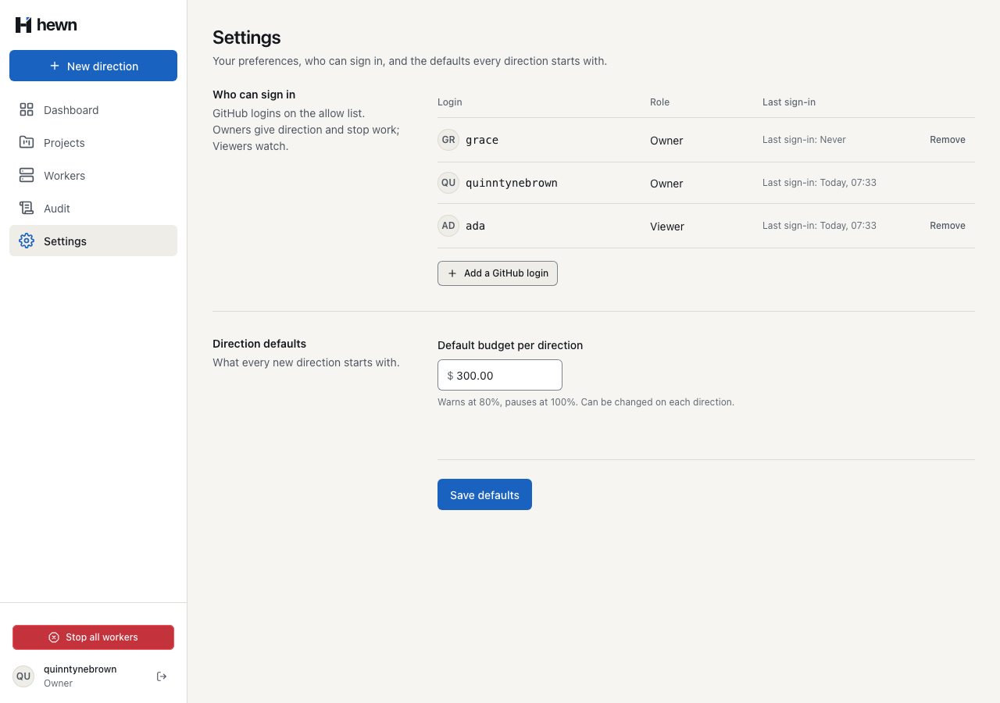
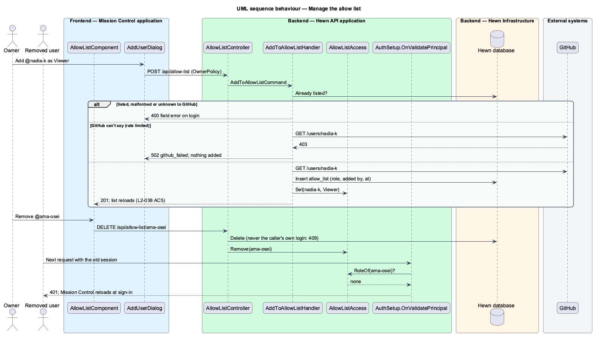
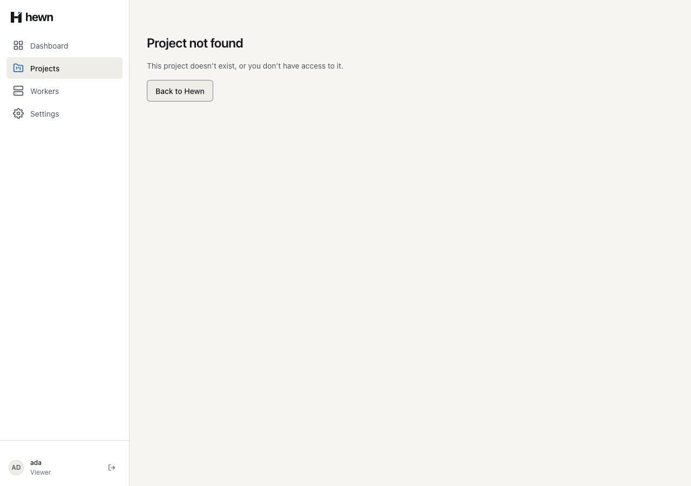
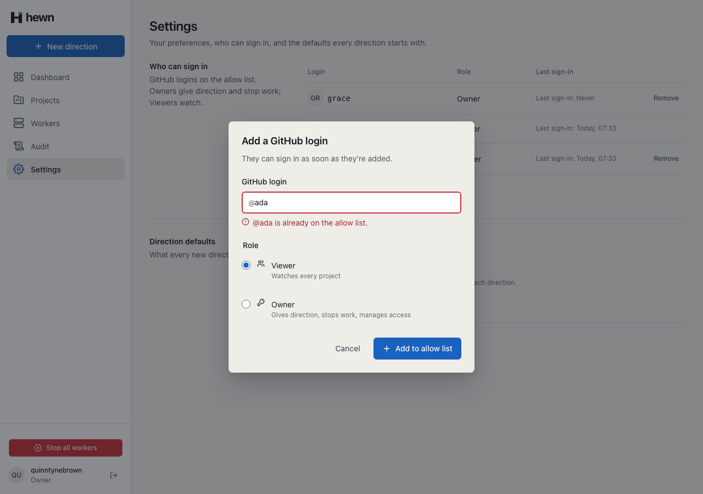
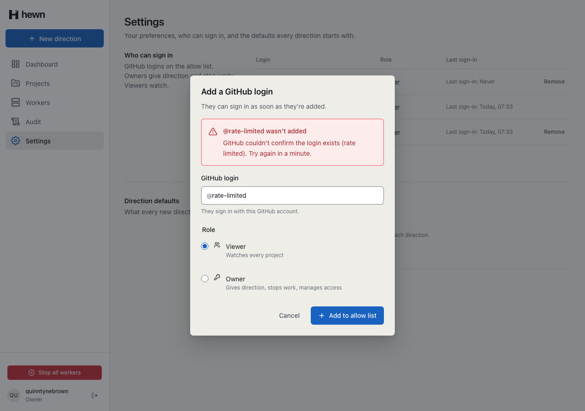
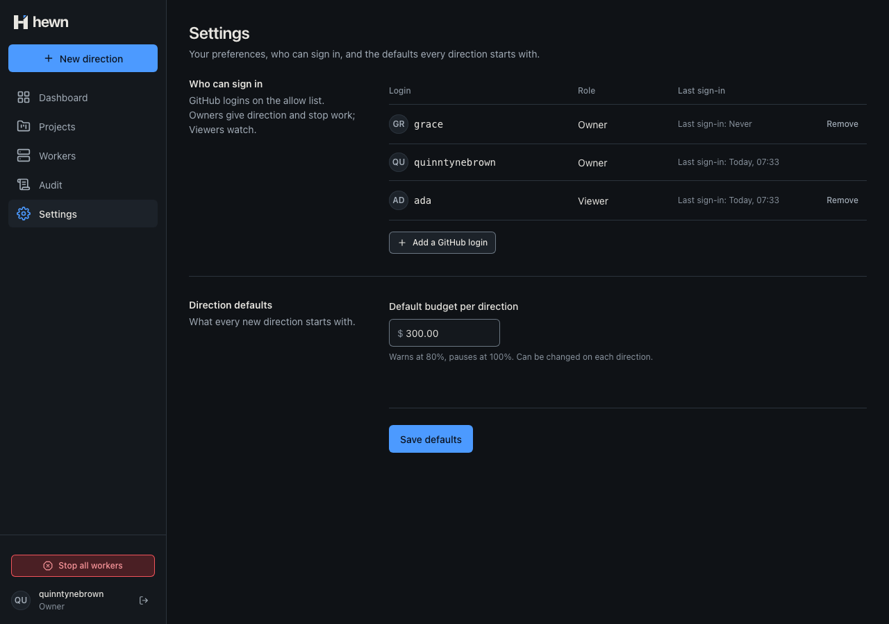
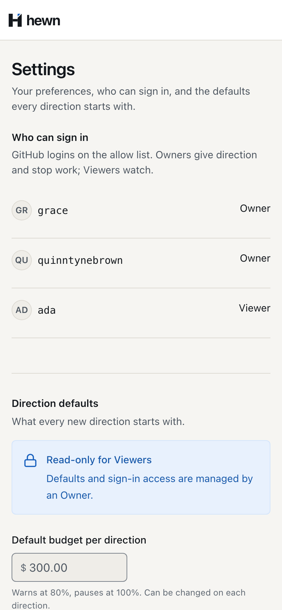

Who can sign in, with which role, enforced on every request.


if (await db.AllowList.AnyAsync(a => a.Login == login, cancellationToken))
{
throw Invalid($"@{login} is already on the allow list.", $"@{login} is already on the allow list", "already_listed");
}
if (await gitHub.FindLoginAsync(login, cancellationToken) is null)
{
throw Invalid($"No GitHub account is called @{login}.", $"No GitHub account is called @{login}", "unknown_login");
}
var entry = AllowListEntry.Add(login, command.Role, command.AddedBy, clock.GetUtcNow());
db.AllowList.Add(entry);
await db.SaveChangesAsync(cancellationToken);
access.Set(entry.Login, entry.Role);
return new AllowListEntryDto(entry.Login, entry.Role, entry.LastSignInAt);
/// <summary>
/// Whether a session may still be used (L2-038 AC3, AC5): it wasn't signed out, and its login is still on the allow
/// list with the role it signed in with. Removing a login, or changing its role, ends its sessions.
/// </summary>
public sealed record IsSessionValidQuery(Guid SessionId, string Login, string Role) : IRequest<bool>;
public sealed class IsSessionValidHandler(IAppDbContext db, RevokedSessions revoked, AllowListAccess access) : IRequestHandler<IsSessionValidQuery, bool>
{
public async Task<bool> Handle(IsSessionValidQuery query, CancellationToken cancellationToken) =>
!await revoked.ContainsAsync(query.SessionId, db, cancellationToken)
&& await access.RoleOfAsync(query.Login, db, cancellationToken) is { } role
&& string.Equals(role.ToString(), query.Role, StringComparison.Ordinal);
}
public sealed class RemoveFromAllowListHandler(IAppDbContext db, AllowListAccess access) : IRequestHandler<RemoveFromAllowListCommand>
{
public async Task Handle(RemoveFromAllowListCommand command, CancellationToken cancellationToken)
{
var login = command.Login.Trim().TrimStart('@').ToLowerInvariant();
if (string.Equals(login, command.RemovedBy, StringComparison.OrdinalIgnoreCase))
{
throw new ConflictException("cannot_remove_yourself", "You can't remove yourself; ask another Owner.");
}
var entry = await db.AllowList.SingleOrDefaultAsync(a => a.Login == login, cancellationToken)
?? throw new NotFoundException();
db.AllowList.Remove(entry);
await db.SaveChangesAsync(cancellationToken);
<span class="text-xs text-subtle lg-only">{{
lastSignIn(entry.lastSignInAt)
}}</span>
<span class="row__actions">
@if (session.isOwner() && entry.login !== session.me()?.login) {
@if (removing() === entry.login) {
<button
class="btn btn--ghost btn--sm"
type="button"
aria-busy="true"
disabled
>
Removing…
</button>
} @else {
private readonly allNav: NavItem[] = [
{ label: 'Dashboard', link: '/dashboard', icon: 'dashboard' },
{ label: 'Projects', link: '/projects', icon: 'projects' },
{ label: 'Workers', link: '/workers', icon: 'workers' },
{ label: 'Audit', link: '/audit', icon: 'audit', ownerOnly: true },
{ label: 'Settings', link: '/settings', icon: 'settings' },
];
protected readonly nav = computed(() =>
this.allNav.filter((item) => !item.ownerOnly || this.session.isOwner()),
);
POST /api/allow-list (as nadia-k, Viewer) → 403 Forbidden POST /api/workers/stop (as nadia-k, Viewer) → 403 Forbidden GET /api/me (nadia-k, after removal) → 401 Unauthorized

GET /api/projects/0b5e1f9c… (as ada)
→ 404
{
"type": "https://tools.ietf.org/html/rfc9110#section-15.5.5",
"title": "Not found",
"status": 404,
"code": "not_found"
}
[Fact]
public async Task Removing_a_login_ends_its_session_at_once()
{
var viewer = await _factory.SignInAsync("ada", Role.Viewer);
Assert.Equal(HttpStatusCode.OK, (await viewer.GetAsync("/api/me")).StatusCode);
var removed = await _owner.DeleteAsync("/api/allow-list/Ada");
Assert.Equal(HttpStatusCode.NoContent, removed.StatusCode);
Assert.DoesNotContain(await ListAsync(_owner), e => e.GetProperty("login").GetString() == "ada");
Assert.Equal(HttpStatusCode.Unauthorized, (await viewer.GetAsync("/api/me")).StatusCode);
}
var viewer = await _factory.SignInAsync("ada", Role.Viewer);
var changes = StateChanges().ToList();
Assert.True(changes.Count >= 10, $"only {changes.Count} state-changing endpoints found");
var allowed = new List<string>();
foreach (var (method, url) in changes)
{
var response = await viewer.SendAsync(method, url, new { });
if (response.StatusCode != HttpStatusCode.Forbidden)
{
allowed.Add($"{method} {url}: {(int)response.StatusCode}");
}
}
Assert.Empty(allowed);
}
11 new: the list, adding, removing, every change as a Viewer, every project route
Last sign-in, initials, why it wasn't added
7 behaviour, 3 visual, 5 a11y



